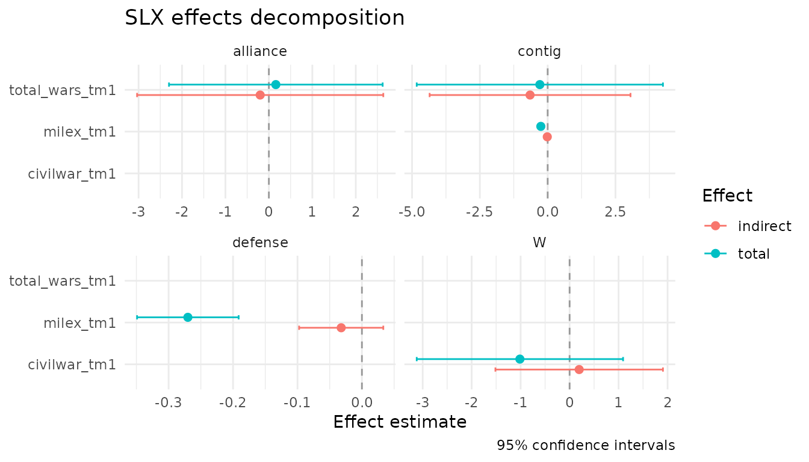

The Spatial-X model
The Spatial-X (SLX) model has the form
where W is a spatial weights matrix and WX
adds spatially-lagged versions of selected regressors. Wimpy, Whitten,
and Williams (2021) argue that the SLX specification more faithfully
reflects typical political science theories than the more common SAR
model, and is much easier to estimate and interpret: it is plain OLS on
an augmented design matrix.
slxr exists because the mechanics of building
W, multiplying it by the right columns of X,
and reporting direct/indirect/total effects cleanly is more friction
than applied researchers should have to endure.
The example dataset
The package ships with defense_burden, a 1995
cross-section of 179 countries drawn from the replication archive of
Wimpy, Whitten, and Williams (2021). The data include change in military
expenditures (the outcome), lagged covariates, and three
row-standardized spatial weights matrices encoding different channels of
international connectivity.
library(slxr)
data(defense_burden)
names(defense_burden)
#> [1] "data" "W_contig" "W_alliance" "W_defense"
dim(defense_burden$data)
#> [1] 179 12
dim(defense_burden$W_contig)
#> Loading required namespace: Matrix
#> NULLdefense_burden$data is a tibble with country-level
observations. defense_burden$W_contig,
$W_alliance, and $W_defense are sparse weights
matrices connecting those countries through geographic contiguity,
alliance ties, and mutual defense pacts, respectively.
Fitting an SLX model with a single W
The simplest case: one weights matrix, one lagged variable. We lag
only total_wars_tm1 through contiguity, so the indirect
effect captures the spillover from interstate wars in neighboring
countries.
W_contig <- slx_weights(style = "custom",
matrix = defense_burden$W_contig,
row_standardize = FALSE)
fit <- slx(ch_milex ~ milex_tm1 + log_pop_tm1 + civilwar_tm1 +
total_wars_tm1 + alliance_us +
ch_milex_us + ch_milex_ussr,
data = defense_burden$data,
W = W_contig,
lag = "total_wars_tm1")
summary(fit)
#> Spatial-X (SLX) model summary
#> n = 179 R^2 = 0.416 adj R^2 = 0.396
#>
#> Estimate Std. Error t value Pr(>|t|)
#> (Intercept) 0.242197 0.479381 0.5052 0.61405
#> milex_tm1 -0.245628 0.023712 -10.3586 < 2e-16 ***
#> log_pop_tm1 0.043155 0.055538 0.7770 0.43820
#> civilwar_tm1 -1.232301 0.582912 -2.1140 0.03595 *
#> total_wars_tm1 0.385103 0.899151 0.4283 0.66897
#> alliance_us -0.407637 0.249121 -1.6363 0.10361
#> W.total_wars_tm1 -0.740396 1.566531 -0.4726 0.63707
#> ---
#> Signif. codes: 0 '***' 0.001 '**' 0.01 '*' 0.05 '.' 0.1 ' ' 1
#>
#> Spatial lag terms:
#> variable w_name order time_lag colname
#> total_wars_tm1 W 1 0 W.total_wars_tm1The W.total_wars_tm1 row is the spatial spillover. To
get a clean direct/indirect/total decomposition:
slx_effects(fit)
#> # A tibble: 3 × 8
#> variable w_name type estimate std.error conf.low conf.high p.value
#> <chr> <chr> <chr> <dbl> <dbl> <dbl> <dbl> <dbl>
#> 1 total_wars_tm1 NA direct 0.385 0.899 -1.39 2.16 0.669
#> 2 total_wars_tm1 W indirect -0.740 1.57 -3.83 2.35 0.637
#> 3 total_wars_tm1 W total -0.355 1.65 -3.61 2.89 0.829For SLX these effects are a simple function of OLS coefficients and their variance-covariance matrix - no matrix inversion, no simulation.
Variable-specific weights matrices
The defining feature of Wimpy, Whitten, and Williams (2021) is that
different covariates can spill over through different W
matrices. Civil wars spread through geography; alliance ties produce
joint responses to interstate conflict; defense-pact partners coordinate
military spending. All three mechanisms can sit in a single model.
W_alliance <- slx_weights(style = "custom",
matrix = defense_burden$W_alliance,
row_standardize = FALSE)
W_defense <- slx_weights(style = "custom",
matrix = defense_burden$W_defense,
row_standardize = FALSE)
fit_multi <- slx(
ch_milex ~ milex_tm1 + log_pop_tm1 + civilwar_tm1 +
total_wars_tm1 + alliance_us +
ch_milex_us + ch_milex_ussr,
data = defense_burden$data,
spatial = list(
civilwar_tm1 = W_contig,
total_wars_tm1 = list(contig = W_contig, alliance = W_alliance),
milex_tm1 = list(contig = W_contig, defense = W_defense)
)
)
slx_effects(fit_multi)
#> # A tibble: 13 × 8
#> variable w_name type estimate std.error conf.low conf.high p.value
#> <chr> <chr> <chr> <dbl> <dbl> <dbl> <dbl> <dbl>
#> 1 civilwar_tm1 NA direct -1.21 0.597 -2.39 -0.0323 4.41e- 2
#> 2 total_wars_tm1 NA direct 0.360 1.08 -1.78 2.50 7.40e- 1
#> 3 milex_tm1 NA direct -0.238 0.0254 -0.288 -0.188 5.34e-17
#> 4 civilwar_tm1 W indir… 0.196 0.866 -1.52 1.91 8.22e- 1
#> 5 milex_tm1 contig indir… -0.0148 0.0336 -0.0811 0.0516 6.61e- 1
#> 6 milex_tm1 defense indir… -0.0321 0.0331 -0.0974 0.0332 3.33e- 1
#> 7 total_wars_tm1 alliance indir… -0.200 1.44 -3.03 2.63 8.89e- 1
#> 8 total_wars_tm1 contig indir… -0.649 1.88 -4.35 3.05 7.30e- 1
#> 9 civilwar_tm1 W total -1.01 1.07 -3.12 1.09 3.43e- 1
#> 10 total_wars_tm1 contig total -0.289 2.30 -4.83 4.25 9.00e- 1
#> 11 total_wars_tm1 alliance total 0.160 1.25 -2.30 2.62 8.98e- 1
#> 12 milex_tm1 contig total -0.253 0.0355 -0.323 -0.183 2.97e-11
#> 13 milex_tm1 defense total -0.270 0.0399 -0.349 -0.191 2.12e-10Here total_wars_tm1 and milex_tm1 each
produce two indirect effects - one through each spatial channel - so the
decomposition separates spillovers from geographically-contiguous
neighbors from those transmitted through alliances or defense pacts.
Visualization
library(ggplot2)
slx_plot_effects(fit_multi, types = c("indirect", "total"))
The plot facets automatically by weights matrix name when a variable
is lagged through multiple W channels, so the per-channel
spillover patterns are visible side-by-side.
broom and modelsummary integration
tidy(fit_multi)
glance(fit_multi)
modelsummary::modelsummary(
list("Contiguity only" = fit, "Multi-W" = fit_multi),
statistic = "conf.int"
)